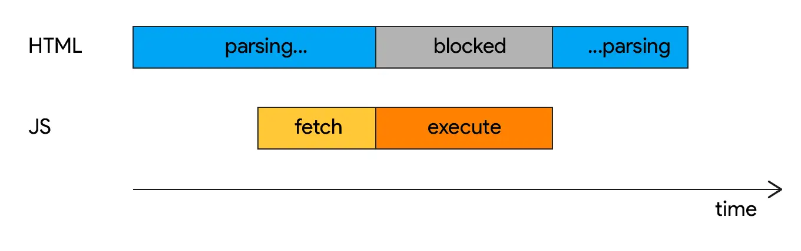

短答
头部里没有 async 或 defer 的第三方脚本会阻挡 HTML 解析。
图显示解析器在等那个脚本。async 让文件下载时不拖住解析器，并在就绪时运行。defer 保持顺序，并在文档解析后运行。SEO 健康更希望内容之外的标签使用这些提示。这张图是顺序示意，不是本站的轨迹。
定义
如果一个推迟的脚本依赖另一个，它们之间的顺序仍然要紧。标签管理器在加载后又注入更多阻挡标签，会在下一层重现问题。审计应该打开管理器的规则，而不是停在 HTML 里那一个 script 标签上。
渲染对爬虫意味着什么变化
把非必要的第三方脚本标成 async 或 defer，并检查标签管理器是否把注入的标签设成阻挡。
首屏真正离不开的支付或身份脚本是少见的例外，即便如此 HTML 也应该已经包含报价。大多数聊天、热力图和广告标签不是例外。把它们移出关键路径，并不免除公司在 HTML 里说明自己卖什么的责任。

要检查什么
- 头部中没有 async 或 defer 的第三方脚本
- 继续注入阻挡标签的标签管理器规则
- HTML 中已经有主要文字
- 属性改完后的一条产品 URL
- 仅当首屏无法工作时才记录例外
一个结构示例
产品模板的头部同步加载标签管理器，管理器的第一条规则是一个同样阻挡的聊天组件。健康改动是推迟管理器，并停止聊天规则使用阻挡式注入。产品名已经在 HTML 里，因此发现只是顺序。
它不声称什么
调整第三方脚本的顺序不保证排名或引用。
Mika Visibility 把它归到哪里
Mika Visibility 把渲染当作 SEO 健康问题：当模板依赖 JavaScript 时，重要 HTML 能否在有脚本和无脚本两种情况下被获取并比较。这种比较不是 GEO 审计，也不是市场覆盖计划。发现要附在样例 URL 上。模板改完之后的再审计，用来确认修复。
图对照阻挡和 async，因此文章可以点名属性而不给出实验室分数。
常见问题
阻挡式的第三方脚本会做什么？
头部里没有 async 或 defer 的第三方脚本会阻挡 HTML 解析。
什么应该标成 async 或 defer？
把非必要的第三方脚本标成 async 或 defer，并检查标签管理器是否把注入的标签设成阻挡。
调整脚本顺序能保证排名吗？
调整第三方脚本的顺序不保证排名或引用。
下一步
做一次结构化的 SEO + GEO 审计，查看健康发现、增长缺口和可以执行的蓝图。
更清晰的实体、答案、证据和上下文，会让页面更容易被理解与引用。任何回答产品中的结果都不作保证。